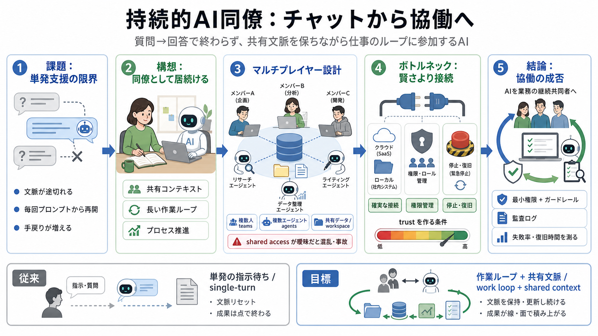

Persistent AI Coworkers Are OpenAI's Third Era
From the article 9+ mentionsSeshan frames era one as chat and era two as agents working with users. Build 2-3 Months Ah…

Persistent AI Coworkers（持続的AI同僚）
AIを「質問→回答」で終わらせず、共有文脈（shared context）を保持しながら仕事のループに参加する同僚へ進化させる構想です。
単発支援の限界
従来のチャットは、都度プロンプト入力でやり取りが完結しがちです。そのため長い作業の前提や途中状態が維持されにくく、手戻りが起きます。
新入社員ではない
「持続的AI同僚」は、参照すべき情報や作業の途中状態を保持し、長いサイクルを通じて役割を果たします。賢さだけでなく“仕事に居続ける”ことが価値になります。
マルチプレイヤー設計
複数人×複数エージェントが同じデータやワークスペースを介して協働する、インターフェースが想定されます。ここでは“文脈維持”がUXとアクセス設計に直結します。
（shared access設計が曖昧だと、協働が混乱や事故を増やす）
分断された窓口
現状は役割とUIが分かれ、Chatは検索と会話、Workはナレッジワーク、Codexは開発が中心です。理想の「単一プロンプトボックス」はまだ途中段階です。
“賢さ”より“接続”
持続的エージェントの成否は、ローカル／クラウドのデータへ安定接続できるか、職場システムへ適切な権限で連携できるかに左右されます。
現場論の核心
データに到達できず、操作もできず、失敗時に止められないなら、知的能力が高くても業務貢献は限定されます。部屋に閉じ込められた新入社員になりがちです。
導入で問われる論点
記事が挙げる課題は、技術だけでなくガバナンス（監査可能性）や安全設計、品質保証に及びます。特にマルチプレイヤー協働は設計の影響が大きいです。
本文から見える不足
読み取れることは方向性ですが、導入判断に必要な具体（設計・評価・停止条件）は不足しています。次の情報があると現場で意思決定しやすくなります。
結論
持続的AI同僚の意義は「単発支援」から「業務の継続共同者」へ役割を拡張することです。ただし“アクセスの信頼性”と“制御・監査”が整わない限り、同僚としての信頼は成立しません。
From the article 9+ mentionsSeshan frames era one as chat and era two as agents working with users. Build 2-3 Months Ah…
past what a rented frontier API delivers. "This is new for 2026," she says. "I think this is very very important." Huang…
2026-era tooling has made the automated-first approach viable in a way it never was before, and that traditional sales l…
Enterprise AI cost structure inverted: models are commodity, data governance/audit infrastructure is the real expense R…
But of course, I have to be careful. AI loves to stack on these things in cron jobs. You have to be careful with tailori…